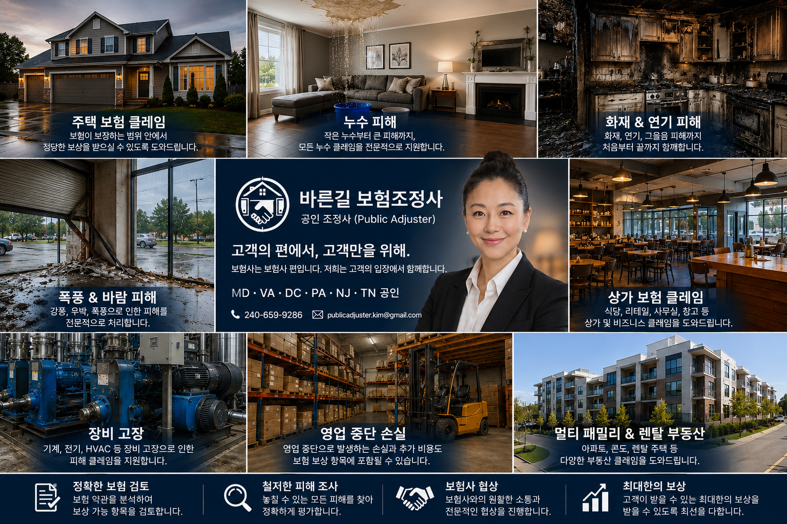

주택 · 상가 보험 클레임 전문
바른길 보험조정사는 보험회사가 아닌 고객의 입장에서 함께하는 공인 조정사 회사입니다. 주택, 렌탈, 상가, 비즈니스 보험 클레임을 체계적으로 도와드립니다.
도와드리는 보험 클레임
보험 클레임은 단순히 눈에 보이는 수리비만 받는 절차가 아닙니다. 보험 약관과 사고 내용에 따라 건물 피해, 개인 물품, 장비, 재고, 영업 손실, 추가 비용 등 다양한 항목을 함께 검토해야 할 수 있습니다.
주택 보험 클레임
- 누수 및 배관 파손
- 동파 피해
- 화재 및 연기 피해
- 폭풍, 강풍, 우박, 나무 전도
- 도난 및 파손
- 렌탈 및 콘도 클레임
- 임시 거주비 검토
상가 보험 클레임
- 상가 누수 및 화재
- 식당, 리테일, 사무실, 창고
- 세입자 시설 피해
- 재고 및 비즈니스 재산 피해
- 멀티패밀리 및 렌탈 부동산
- 영업 중단 손실 및 추가 비용
장비 · 비즈니스 손실
- 기계·장비 고장
- 전기 사고
- HVAC 손상
- 냉장·냉동 장비 고장
- 영업 차질 검토
- 추가 비용 검토
왜 공인조정사가 필요할까요?
보험사 어저스터는 보험사의 기준으로 클레임을 검토합니다. Public Adjuster는 고객의 입장에서 보험 약관과 피해 내용을 검토하고, 정당한 보상이 반영될 수 있도록 돕는 전문가입니다.
보상 가능 항목, 조건, 제한 사항, 제외 조항 등을 검토합니다.
눈에 보이는 손상뿐 아니라 누락될 수 있는 피해 범위를 함께 확인합니다.
피해 내용을 보험사에 명확하고 체계적으로 전달할 수 있도록 정리합니다.
보험사와의 연락, 자료 제출, 추가 검토 요청, 협상을 도와드립니다.
바른길 보험조정사 소개
바른길 보험조정사는 메릴랜드, 버지니아, 워싱턴 DC, 펜실베니아, 뉴저지, 테네시에서 활동하는 공인 조정사 회사입니다.
회사 중심의 전문 브랜드
바른길 보험조정사는 한인 고객과 비즈니스 오너가 신뢰할 수 있는 보험 클레임 전문 브랜드를 목표로 합니다.
대표 공인 조정사
대표 김민영 Licensed Public Adjuster가 주택, 상가, 비즈니스 관련 보험 클레임을 고객의 입장에서 검토하고 진행합니다.
진행 방식
보험 약관 검토, 피해 조사, 자료 정리, 보험사 소통 및 협상을 통해 고객이 보다 정확한 결정을 할 수 있도록 돕습니다.
자주 묻는 질문
언제 연락하는 것이 가장 좋나요?
가장 좋은 시점은 클레임 접수 전 또는 보험사 현장 조사 전입니다. 다만 낮은 견적, 일부 지급, 거절 이후에도 상담 가능합니다.
이미 끝난 클레임도 볼 수 있나요?
보험 약관, 사고 내용, 기간, 자료에 따라 추가 검토가 가능할 수 있습니다. 끝났다고 생각하기 전에 먼저 상담해 보시기 바랍니다.
상가 클레임도 맡으시나요?
네. 주택뿐 아니라 상가, 비즈니스, 영업 중단, 장비 고장, 재고 피해, 건물 피해 관련 클레임도 상담합니다.
무료 상담
보험사 결정이 최종이라고 생각하기 전에 바른길 보험조정사에 먼저 상담해 보세요.
이메일: publicadjuster.kim@gmail.com
공인 지역: MD · VA · DC · PA · NJ · TN
바른길 보험조정사
Right Path Solutions, LLC · Licensed Public Adjusters